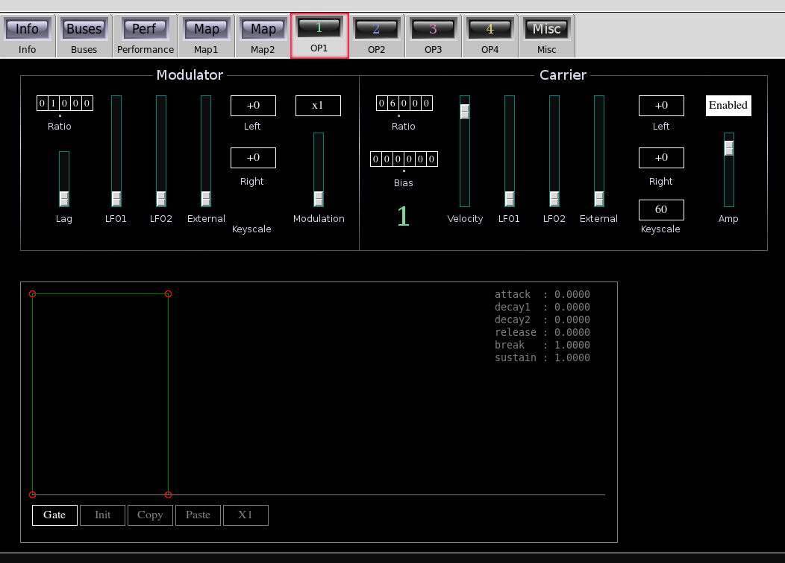
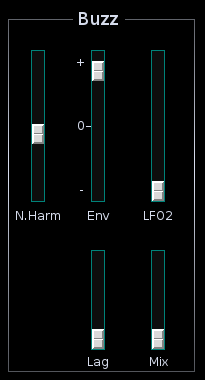
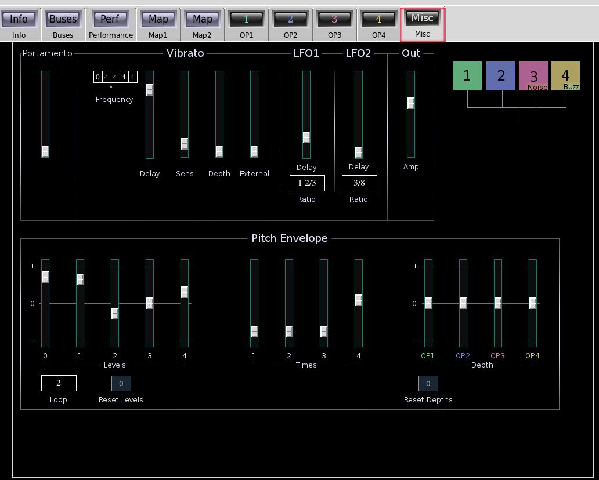

Corvus

| Home | Contents | Synth Catalog | Previous: Algo FM Synth | Next: Combo |
Corvus is an 8 operator FM synth, divided into four "stacks": 1, 2, 3 and 4. Each stack is a simple modulator/carrier pair which share a single envelope. The stacks are identical except that stack 3 contains a noise generator and stack 4 contains a pulse (blip) generator.
 Modulator:- Ratio tumbler - frequency ratio.
- Lag slider - lag applied to modulator envelope.
- LFO1 slider - LFO1 applied to modulation depth.
- LFO2 slider - LFO2 applied to modulation depth.
- External slider - external control applied to modulation depth.
- Left keyscale button - left side key scale in db/octave.
- Right keyscale.
- Modulation slider - modulation depth.
- Modulation scale button - Sets slider sensitivity.
- Ratio tumbler - carrier frequency ratio.
- Bias tumbler - fixed bias added to carrier frequency.
- Velocity slider - Sensitivity to key velocity is applied to carrier and modulator jointly.
- LFO1 - LFO1 applied to carrier amplitude.
- LFO2 - LFO2 applied to carrier amplitude.
- Left keyscale button - left side key scale in db/octave.
- Right keyscale.
- keyscale button - reference key (60 = middle C).
- Enable button
- Amp - carrier volume slider.
Each stack has a single ADDSR envelope shared between the carrier and modulator. The modulator lag slider introduces some variation in how the envelope is used between the two components.
Stack 3 contains a filtered noise source ring modulated with the normal carrier output. This works best with low modulation depths. For narrow bandwidths the result is a cluster of random components around the carrier frequency.

Stack 4 contains an extra Buzz pulse generator.
- N.Harmonics slider - number of harmonics
- Env slider, envelope to harmonic count
- Lag slider, lag time applied to envelope
- LFO2 slider, LFO2 to harmonic count
- Mix Slider, mix between buzz and normal carrier signal
The Misc tab contains, LFO, pitch envelope and main output controls.
- Portamento time, (does not work with Poly1 keymode)
Corvus uses three LFOs. The master LFO is dedicated to vibrato. LFOs 1 and 2 are for modulation depth and tremolo. The frequencies of LFOs 1 and 2 are relative to the vibrato frequency.
- Frequency tumbler, primary LFO frequency
- Delay slider, vibrato onset delay
- Sens slider, vibrato sensitivity
- Depth slider, vibrato depth
- External slider, external control signal applied to pitch
- LFO1 and LFO2 delay sliders, onset delay
- LFO1 and LFO2 ratio button, relative frequency ratio
- Main output amp slider
Corvus has a 4-stage pitch envelope which may be looped. The envelope is set by 5 level and 4 time sliders. The envelope is applied individually to each of the 4 stacks.
Buses: Corvus has 5 audio output buses and 1 control input.
- outbus - main output combines the four stacks
- outbus1 - stack 1 output
- outbus2 - stack 2 output
- outbus3 - stack 3 output
- outbus4 - stack 4 output
- xbus - control input
Parameters:
General Parameters:- port - portamento time (0.0 ... 1.0)
- amp - main amplitude (0.0 ... 2.0)
- vfreq - primary (vibrato) LFO frequency (0.0 ... 99.999)
- vdelay - vibrato onset delay (0.0 ... 4.0)
- vsens - vibrato sensitivity (0.0 ... 1.0)
- vdepth - vibrato depth (0.0 ... 1.0)
- xpitch - external control to pitch (0.0 ... 1.0)
- lfo1_ratio - LFO1 frequency ratio, *see below
- lfo1_delay - LFO1 onset delay (0.0 ... 4.0)
- lfo2_ratio - LFO2 frequency ratio, *see below
- lfo2_delay - LFO2 onset delay (0.0 ... 4.0)
Pitch envelope parameters:
- pe_t1 - segment 1 time (0.0 ... 8.0)
- pe_t2 - segment 2 time (0.0 ... 8.0)
- pe_t3 - segment 3 time (0.0 ... 8.0)
- pe_t4 - segment 4 time (0.0 ... 8.0)
- pe_a0 - initial level (-1.0 ... +1.0)
- pe_a1 - segment 1 level (-1.0 ... +1.0)
- pe_a2 - segment 2 level (-1.0 ... +1.0)
- pe_a3 - segment 3 level (-1.0 ... +1.0)
- pe_a4 - segment 4 level (-1.0 ... +1.0)
- pe_loop - loop segment selection (1|2|3|4)
- op?_enable - Enable carrier output (0|1)
- op?_ratio - carrier frequency ratio (0.0 ...99.999)
- op?_bias - carrier bias frequency (0.0 ... 999.999)
- op?_amp - carrier amplitude (0.0 ... 2.0)
- op?_velocity - combined carrier/modulator velocity sensitivity (0.0 ... 1.0)
- op?_lfo1 - LFO1 to carrier tremolo (0.0 ... 1.0)
- op?_lfo2 - LFO2 to carrier tremolo (0.0 ... 1.0)
- op?_external - external control to carrier amplitude (0.0 ... 1.0)
- op?_left - carrier left key scale in db/octave **see below
- op?_right - carrier right key scale in db/octave **see below
- op?_key - combined carrier/modulator reference key **see below
- op?_attack - attack time (0.0 ... 8.0)
- op?_decay1 - initial decay time (0.0 ... 8.0)
- op?_decay2 - second decay time (0.0 ... 8.0)
- op?_release - release time (0.0 ... 8.0)
- op?_breakpoint - envelope breakpoint (0.0 ... 1.0)
- op?_sustain - envelope sustain level (0.0 ... 1.0)
- op?_env_mode - envelope mode (0=gated, 1=triggered)
- op?_pe - pitch envelope depth (-1.0 ... +1.0)
- fm_ratio - modulator frequency ratio (0.0 ... 99.999)
- fm_modscale - modulator scale factor (1,10,100,1000,10000)
- fm_moddepth - modulation depth (0.0 ... 1.0)
- fm_lag - modulator envelope lag time (0.0 ... 1.0)
- fm_lfo1 - LFO1 to modulation depth (0.0 ... 1.0)
- fm_lfo2 - LFO2 to modulation depth (0.0 ... 1.0)
- fm_external - external control to modulation depth (0.0 ... 1.0)
- fm_left - modulator left key scale **see below
- fm_right - modulator right key scale **see below
(-18,-15,-12,-9,-6,-5,-4,-3,-2,-1,0,+1,+2,+3,+4,+5,+6,+9,+12,+15,+18)
Reference key is in MIDI note number with possible values:
(0,6,12, ..., 114,120,126)
OP3 Noise parameters:
- nse3_mix - mix between carrier and noise (0.0 ... 1.0)
- nse3_bw - noise bandwidth (1,2,3,...,10,20,30,...,100,200,300,...,1000)
- bzz4_n - number of harmonics (1,2,3,...,128)
- bzz4_env - envelope applied to harmonic count (-128,-127,...,-1,0,+1,...+127,+128)
- bzz4_lfo2 - LFO2 applied to harmonic count (0,1,2,...,128)
- bzz4_lag - lag time applied to envelope (0.0 ... 1.0)
- bzz4_mix - mix between carrier and buzz signals (0.0 ... 1.0)
| Home | Contents | Synth Catalog | Previous: Algo FM Synth | Next: Combo |